Part A: Image Warping and Mosaicing
A.1: Shoot the Pictures
Outdoor
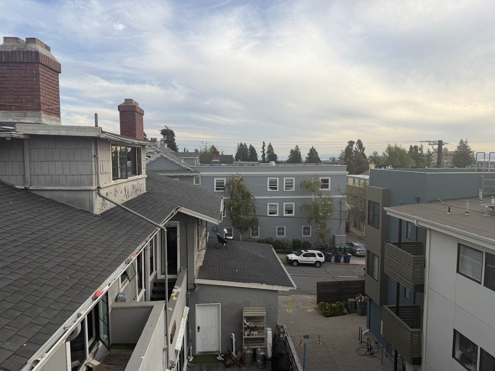
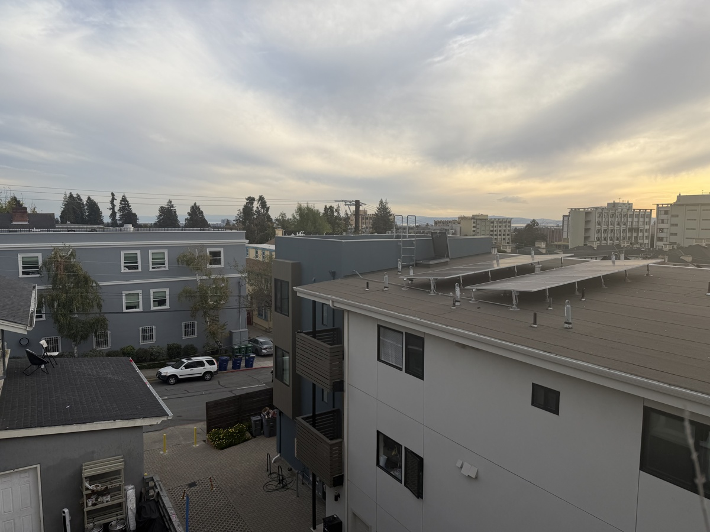
Kitchen
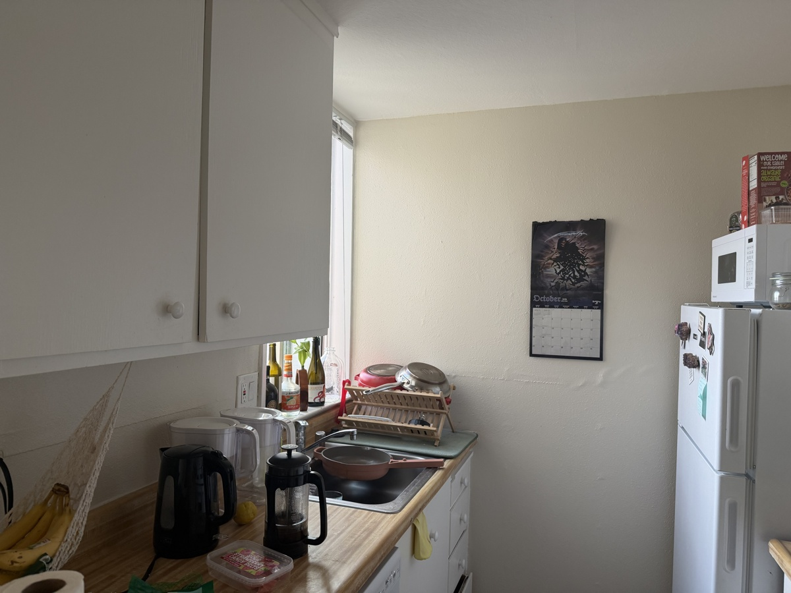
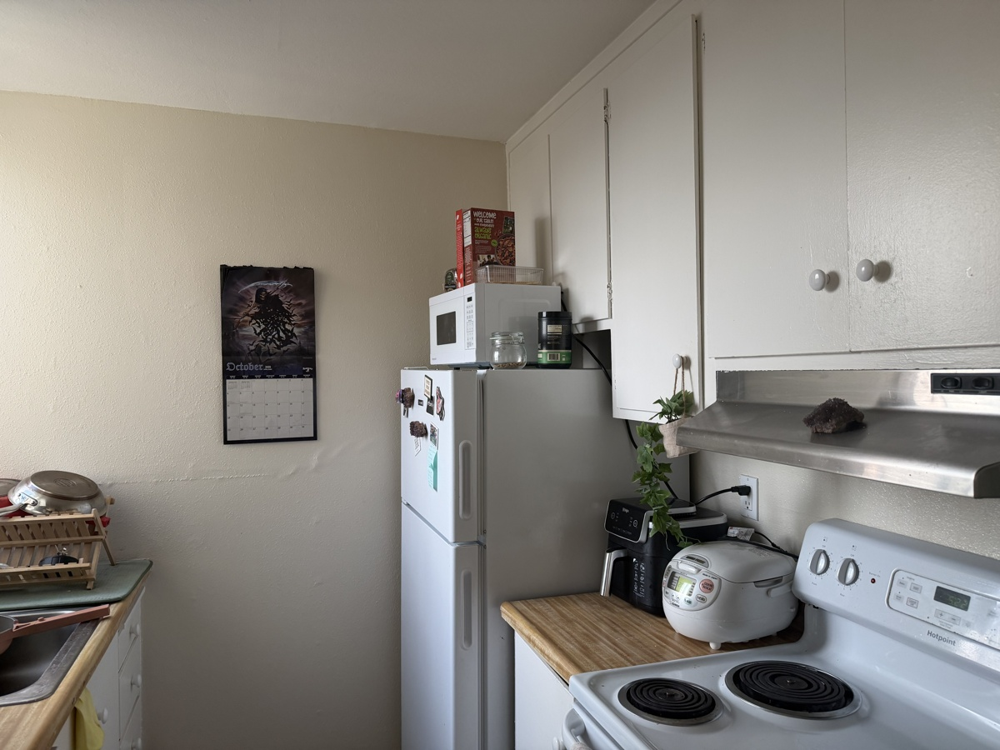
Living room
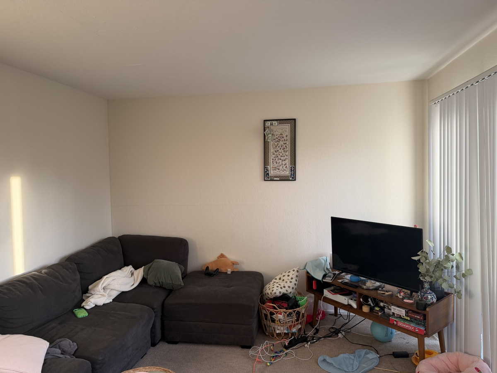
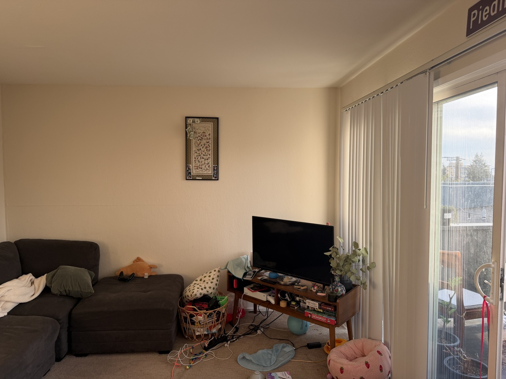
A.2: Recover Homographies
System of equations
A point (x, y) in Image 1 matches a point (x′, y′) in Image 2.
Rearranging gives two linear equations for each matching pair:
xh21 + yh22 + h23 − xy′h31 − yy′h32 = y′
Stack these equations into Ah = b, where h contains the eight unknown entries of H, and solve using least squares.
Correspondences visualized
Outdoor
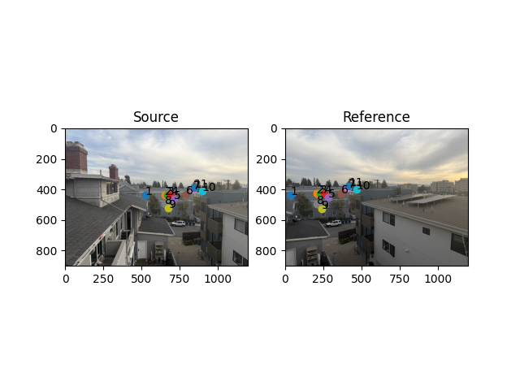
System of equations: Ah = b (click to expand)
Ah = b h = [h₁₁ h₁₂ h₁₃ h₂₁ h₂₂ h₂₃ h₃₁ h₃₂]ᵀ A (22 × 8) b (22 × 1) [ 524.00 437.00 1.00 0.00 0.00 0.00 -19932.96 -16623.48 ] [ 38.04 ] [ 0.00 0.00 0.00 524.00 437.00 1.00 -227929.52 -190086.26 ] [ 434.98 ] [ 653.00 435.00 1.00 0.00 0.00 0.00 -137130.00 -91350.00 ] [ 210.00 ] [ 0.00 0.00 0.00 653.00 435.00 1.00 -279771.32 -186371.40 ] [ 428.44 ] [ 671.00 435.00 1.00 0.00 0.00 0.00 -155698.84 -100937.40 ] [ 232.04 ] [ 0.00 0.00 0.00 671.00 435.00 1.00 -287275.23 -186236.55 ] [ 428.13 ] [ 692.00 435.00 1.00 0.00 0.00 0.00 -177913.20 -111838.50 ] [ 257.10 ] [ 0.00 0.00 0.00 692.00 435.00 1.00 -295809.24 -185949.45 ] [ 427.47 ] [ 713.00 461.00 1.00 0.00 0.00 0.00 -201422.50 -130232.50 ] [ 282.50 ] [ 0.00 0.00 0.00 713.00 461.00 1.00 -324350.83 -209713.51 ] [ 454.91 ] [ 795.00 434.00 1.00 0.00 0.00 0.00 -295056.30 -161074.76 ] [ 371.14 ] [ 0.00 0.00 0.00 795.00 434.00 1.00 -337223.10 -184094.12 ] [ 424.18 ] [ 840.00 401.00 1.00 0.00 0.00 0.00 -348087.60 -166170.39 ] [ 414.39 ] [ 0.00 0.00 0.00 840.00 401.00 1.00 -328440.00 -156791.00 ] [ 391.00 ] [ 652.00 497.00 1.00 0.00 0.00 0.00 -138126.20 -105289.45 ] [ 211.85 ] [ 0.00 0.00 0.00 652.00 497.00 1.00 -324572.12 -247411.57 ] [ 497.81 ] [ 674.00 523.00 1.00 0.00 0.00 0.00 -161342.12 -125195.74 ] [ 239.38 ] [ 0.00 0.00 0.00 674.00 523.00 1.00 -353796.08 -274533.16 ] [ 524.92 ] [ 898.00 410.00 1.00 0.00 0.00 0.00 -420695.04 -192076.80 ] [ 468.48 ] [ 0.00 0.00 0.00 898.00 410.00 1.00 -358903.66 -163864.70 ] [ 399.67 ] [ 844.00 388.00 1.00 0.00 0.00 0.00 -353568.48 -162540.96 ] [ 418.92 ] [ 0.00 0.00 0.00 844.00 388.00 1.00 -319158.60 -146722.20 ] [ 378.15 ]
Recovered homography matrix
H = 2.27299820 0.03727983 -1149.75859947 0.41983862 1.80757132 -346.81468952 0.00107721 -0.00008887 1.00000000
Kitchen
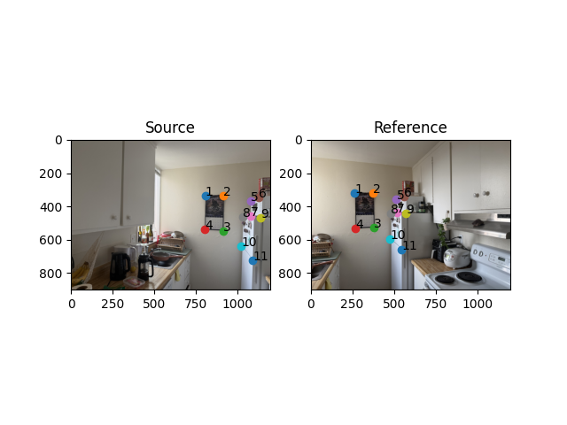
System of equations: Ah = b (click to expand)
Ah = b h = [h₁₁ h₁₂ h₁₃ h₂₁ h₂₂ h₂₃ h₃₁ h₃₂]ᵀ A (22 × 8) b (22 × 1) [ 808.00 337.00 1.00 0.00 0.00 0.00 -213716.00 -89136.50 ] [ 264.50 ] [ 0.00 0.00 0.00 808.00 337.00 1.00 -257485.36 -107391.79 ] [ 318.67 ] [ 917.00 333.00 1.00 0.00 0.00 0.00 -343755.79 -124831.71 ] [ 374.87 ] [ 0.00 0.00 0.00 917.00 333.00 1.00 -295136.45 -107176.05 ] [ 321.85 ] [ 913.00 546.00 1.00 0.00 0.00 0.00 -346410.46 -207163.32 ] [ 379.42 ] [ 0.00 0.00 0.00 913.00 546.00 1.00 -480758.41 -287507.22 ] [ 526.57 ] [ 804.00 540.00 1.00 0.00 0.00 0.00 -216718.20 -145557.00 ] [ 269.55 ] [ 0.00 0.00 0.00 804.00 540.00 1.00 -427752.12 -287296.20 ] [ 532.03 ] [ 1081.00 365.00 1.00 0.00 0.00 0.00 -557114.97 -188110.05 ] [ 515.37 ] [ 0.00 0.00 0.00 1081.00 365.00 1.00 -387592.55 -130870.75 ] [ 358.55 ] [ 1126.00 347.00 1.00 0.00 0.00 0.00 -631629.70 -194649.65 ] [ 560.95 ] [ 0.00 0.00 0.00 1126.00 347.00 1.00 -384326.32 -118438.04 ] [ 341.32 ] [ 1080.00 456.00 1.00 0.00 0.00 0.00 -558630.00 -235866.00 ] [ 517.25 ] [ 0.00 0.00 0.00 1080.00 456.00 1.00 -470361.60 -198597.12 ] [ 435.52 ] [ 1034.00 464.00 1.00 0.00 0.00 0.00 -497767.60 -223369.60 ] [ 481.40 ] [ 0.00 0.00 0.00 1034.00 464.00 1.00 -459127.02 -206029.92 ] [ 444.03 ] [ 1140.00 469.00 1.00 0.00 0.00 0.00 -653117.40 -268694.79 ] [ 572.91 ] [ 0.00 0.00 0.00 1140.00 469.00 1.00 -506046.00 -208189.10 ] [ 443.90 ] [ 1023.00 638.00 1.00 0.00 0.00 0.00 -488093.76 -304402.56 ] [ 477.12 ] [ 0.00 0.00 0.00 1023.00 638.00 1.00 -611293.65 -381236.90 ] [ 597.55 ] [ 1093.00 725.00 1.00 0.00 0.00 0.00 -597269.85 -396176.25 ] [ 546.45 ] [ 0.00 0.00 0.00 1093.00 725.00 1.00 -720538.39 -477941.75 ] [ 659.23 ]
Recovered homography matrix
H = 1.62555921 0.12157498 -970.72016117 0.17876054 1.46767288 -161.78371986 0.00051231 0.00012363 1.00000000
Living room
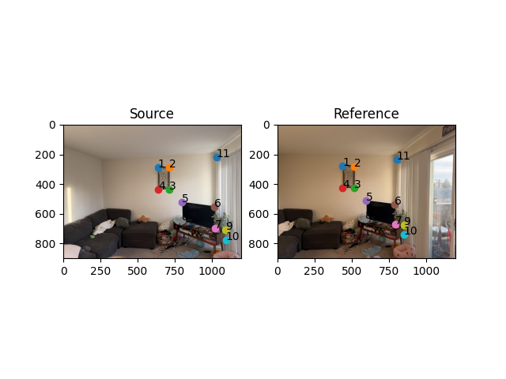
System of equations: Ah = b (click to expand)
Ah = b h = [h₁₁ h₁₂ h₁₃ h₂₁ h₂₂ h₂₃ h₃₁ h₃₂]ᵀ A (22 × 8) b (22 × 1) [ 637.00 290.00 1.00 0.00 0.00 0.00 -280330.96 -127623.20 ] [ 440.08 ] [ 0.00 0.00 0.00 637.00 290.00 1.00 -176799.35 -80489.50 ] [ 277.55 ] [ 713.00 287.00 1.00 0.00 0.00 0.00 -368877.68 -148482.32 ] [ 517.36 ] [ 0.00 0.00 0.00 713.00 287.00 1.00 -199483.14 -80296.86 ] [ 279.78 ] [ 713.00 435.00 1.00 0.00 0.00 0.00 -368635.26 -224903.70 ] [ 517.02 ] [ 0.00 0.00 0.00 713.00 435.00 1.00 -304636.38 -185858.10 ] [ 427.26 ] [ 638.00 435.00 1.00 0.00 0.00 0.00 -281166.60 -191704.50 ] [ 440.70 ] [ 0.00 0.00 0.00 638.00 435.00 1.00 -271819.90 -185331.75 ] [ 426.05 ] [ 800.00 523.00 1.00 0.00 0.00 0.00 -479224.00 -313292.69 ] [ 599.03 ] [ 0.00 0.00 0.00 800.00 523.00 1.00 -410536.00 -268387.91 ] [ 513.17 ] [ 1018.00 552.00 1.00 0.00 0.00 0.00 -803599.02 -435743.28 ] [ 789.39 ] [ 0.00 0.00 0.00 1018.00 552.00 1.00 -546666.00 -296424.00 ] [ 537.00 ] [ 1023.00 698.00 1.00 0.00 0.00 0.00 -811760.73 -553869.98 ] [ 793.51 ] [ 0.00 0.00 0.00 1023.00 698.00 1.00 -686187.48 -468190.48 ] [ 670.76 ] [ 796.00 646.00 1.00 0.00 0.00 0.00 -472035.96 -383084.46 ] [ 593.01 ] [ 0.00 0.00 0.00 796.00 646.00 1.00 -502395.40 -407722.90 ] [ 631.15 ] [ 1092.00 709.00 1.00 0.00 0.00 0.00 -929379.36 -603415.72 ] [ 851.08 ] [ 0.00 0.00 0.00 1092.00 709.00 1.00 -740212.20 -480595.65 ] [ 677.85 ] [ 1095.00 777.00 1.00 0.00 0.00 0.00 -934035.00 -662781.00 ] [ 853.00 ] [ 0.00 0.00 0.00 1095.00 777.00 1.00 -809205.00 -574203.00 ] [ 739.00 ] [ 1030.00 221.00 1.00 0.00 0.00 0.00 -828738.00 -177816.60 ] [ 804.60 ] [ 0.00 0.00 0.00 1030.00 221.00 1.00 -240752.20 -51656.54 ] [ 233.74 ]
Recovered homography matrix
H = 1.36796299 -0.00244923 -338.85823157 0.15110709 1.22699510 -116.09171275 0.00031753 0.00001275 1.00000000
A.3: Warp the Images
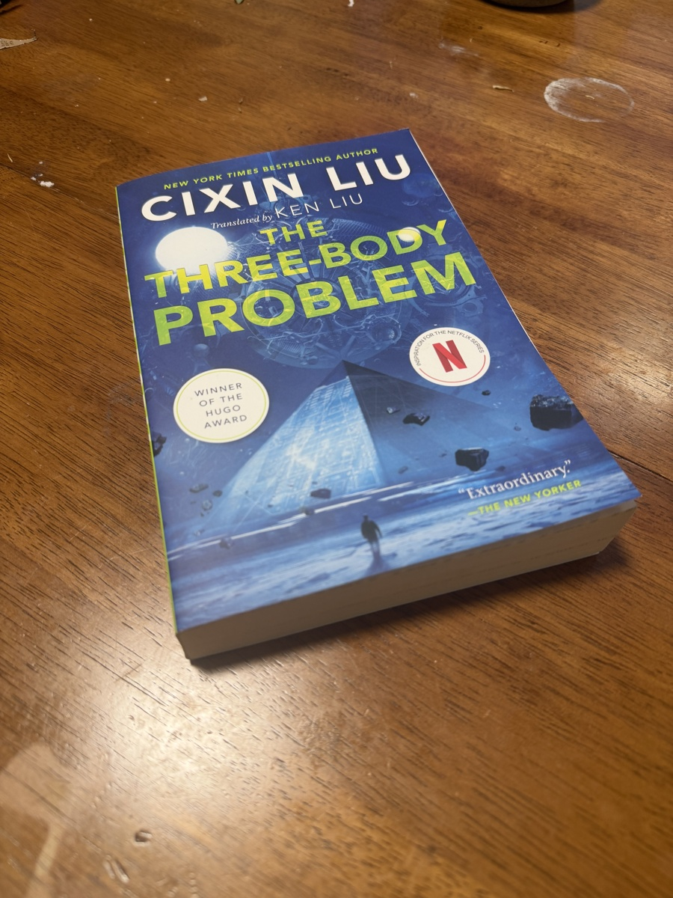
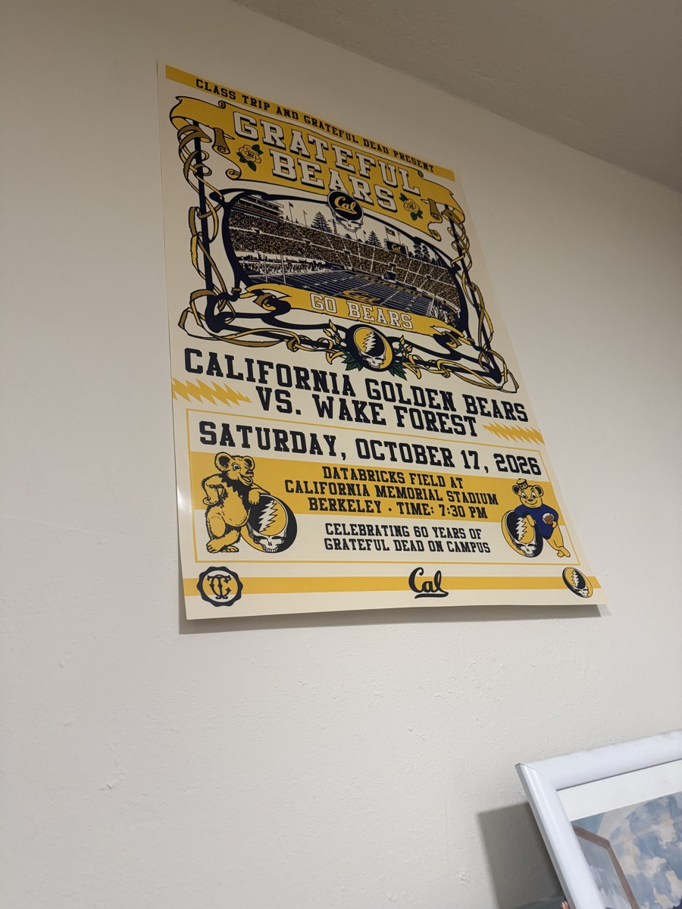
Book: rectification comparison
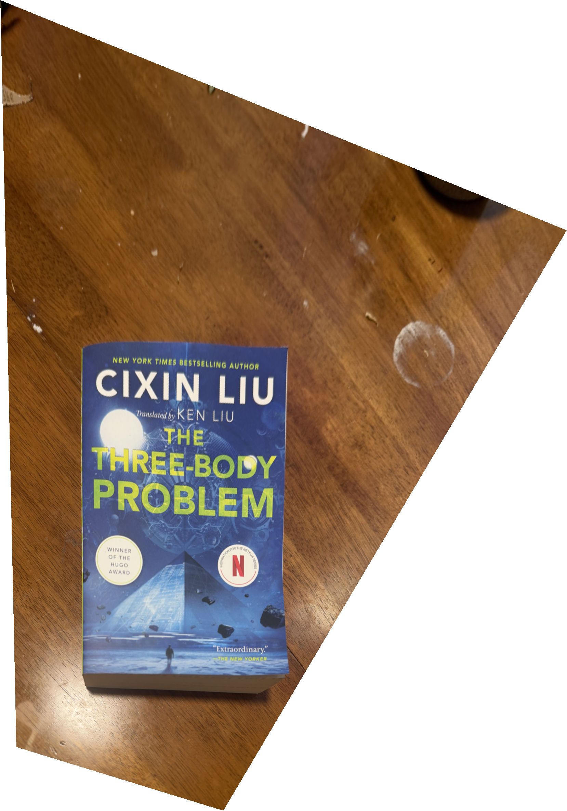
Book: zoomed-in comparison
Book: text close-up comparison
Poster: rectification comparison
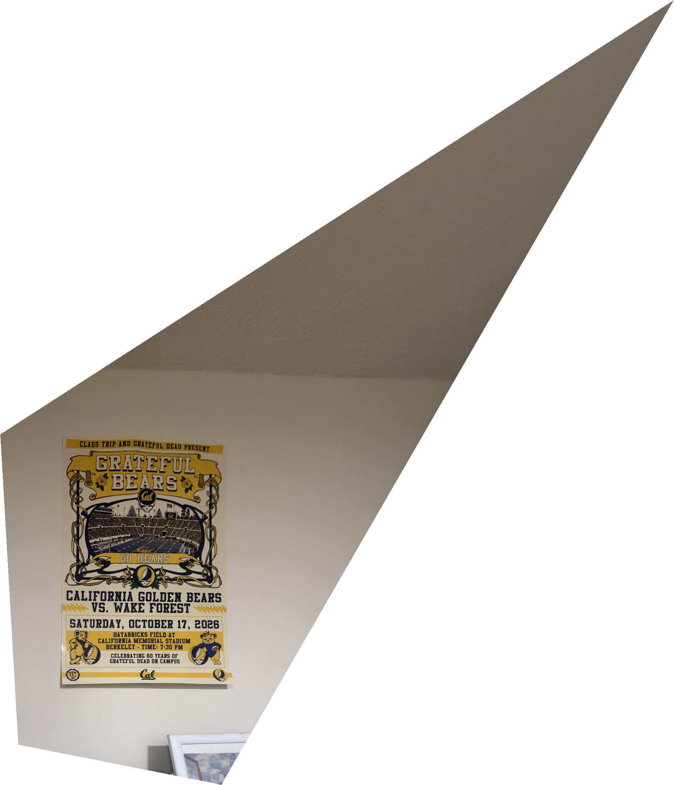
Poster: zoomed-in comparison
Poster: text close-up comparison
Measured runtimes
| Image | Nearest neighbor | Bilinear |
|---|---|---|
| Book | 0.239736 seconds | 0.462926 seconds |
| Poster | 0.204393 seconds | 0.383146 seconds |
Both methods use the same homography, so the difference comes from sampling. Nearest neighbor copies the closest pixel, which produces jagged edges around the book’s lettering and the poster’s outlines. In comparison, bilinear interpolation averages four neighboring pixels using distance-based weights. As a result, the edges look smoother, although small text and fine details become slightly softer. The text close-ups show this difference more clearly: nearest neighbor produces blocky steps along the letters, while bilinear produces more gradual color transitions.
Nearest neighbor was faster. For the book, it took about 0.240 seconds compared with 0.463 seconds for bilinear interpolation. For the poster, the times were about 0.204 and 0.383 seconds. Therefore, bilinear took roughly twice as long but produced smoother results.
A.4: Blend the Images into a Mosaic
First, I kept the second image as the reference and used the recovered homography to warp the first image into its coordinates with bilinear interpolation. I transformed the source corners to find a shared canvas large enough for both images, then offset their positions to handle negative coordinates. An alpha mask identifies valid warped pixels so empty areas do not contribute to the blend.
Next, I assigned feather weights that are highest at each image’s center and decrease linearly to zero at its edges. At each canvas location, I added the colors multiplied by their weights, then divided by the total weight. This gives the center of each image more influence and gradually reduces its contribution near the edges, creating a smoother transition between the two images. As for limitations, some ghosting remains, especially in the kitchen, because feathering smooths the seam but does not correct misaligned features. This means that the same edge appears at slightly different positions in the two images after warping, so blending can leave a doubled outline. For example, ghosting specifically appears at the end of the pot handle in the kitchen sink, where the handle looks slightly doubled.
Outdoor
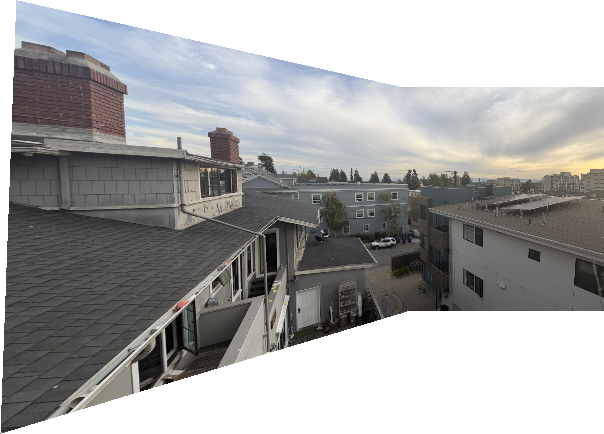
Kitchen
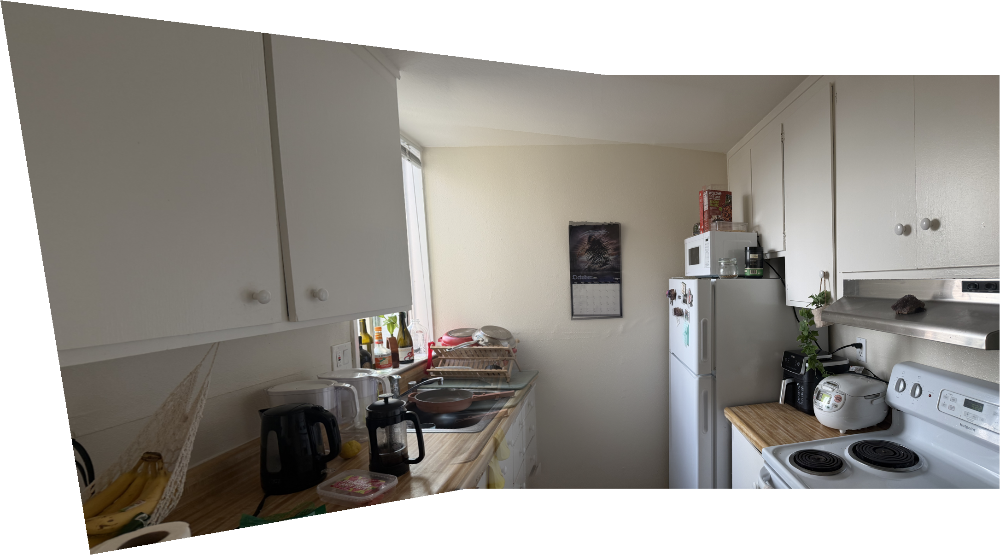
Living room
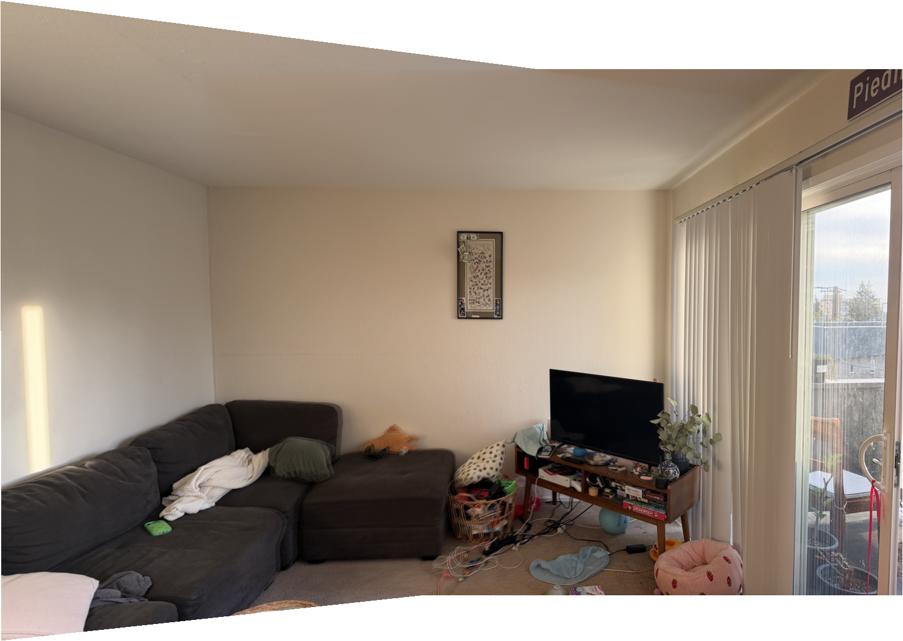
Part B: Feature Matching for Autostitching
B.1: Harris Corner Detection
I left out corners within 20 pixels of the image border so each corner had room for a full descriptor window. I also showed 500 corners in both outdoor overlays so it was easier to compare how ANMS changed their distribution.
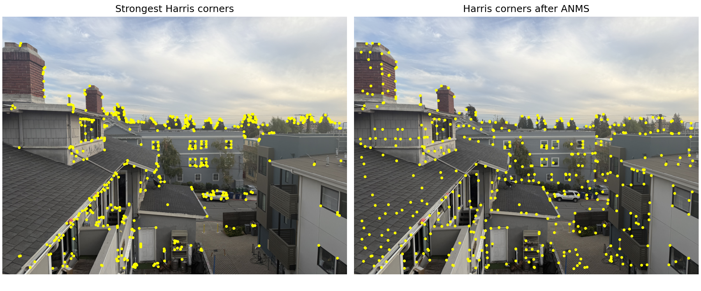
B.2: Feature Descriptor Extraction
I used a single Gaussian blur to approximate the smoothing from two levels of the paper’s pyramid. This softened fine details before sampling and let me extract the patches directly from the original image grid. For the eight examples below, I used corners selected by ANMS in the first outdoor photo, the one with the large brick chimney on the left.
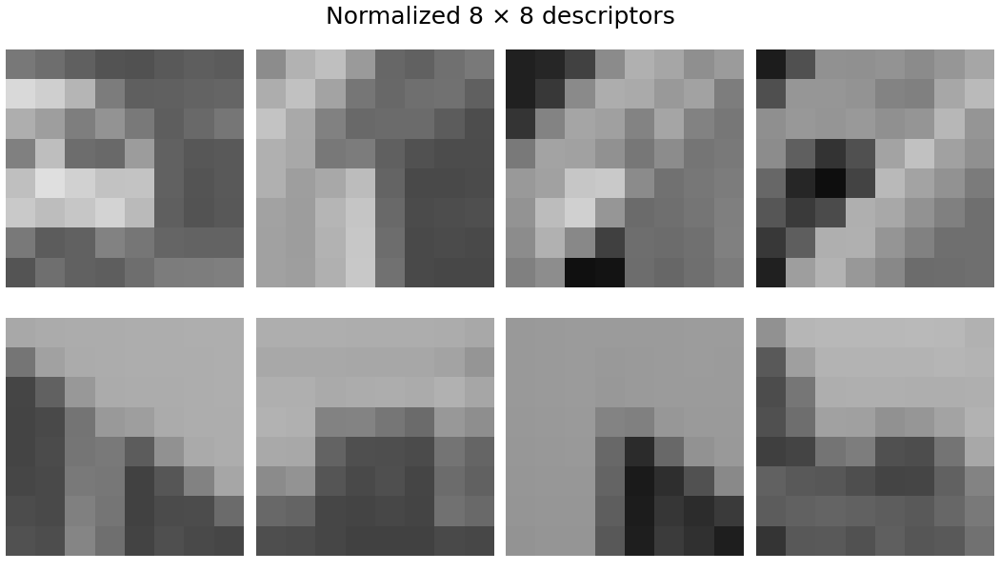
B.3: Feature Matching
I chose a cutoff of 0.6 for the squared-distance ratio based on Figure 6(b) of the paper. That cutoff let me keep matches where the closest patch was clearly better than the runner-up, while leaving enough matches for RANSAC.
Outdoor
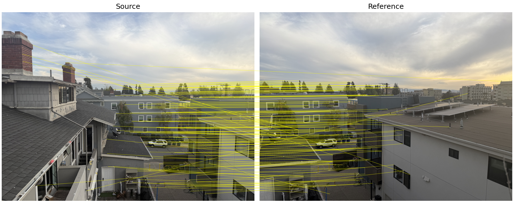
Kitchen
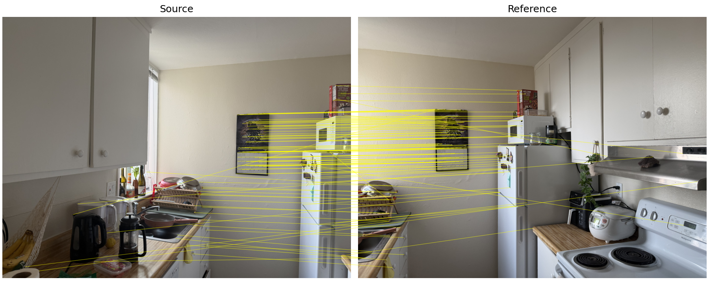
Living room
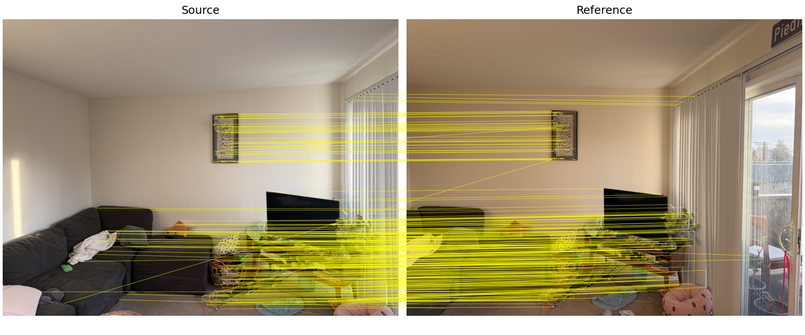
B.4: RANSAC for Robust Homography
I used a four-pixel tolerance to account for small differences in where the same corner was detected in each image. To give RANSAC plenty of chances to draw four good matches, I ran 2,500 trials. For repeatability, I also fixed the seed at 100.
Outdoor
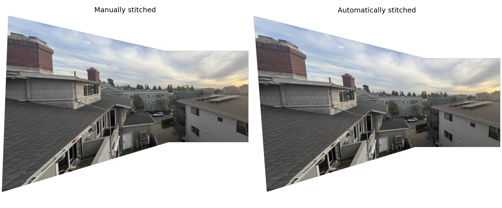
Up close, the SUV’s outline looked doubled in the manual stitch. In the automatic version, its roof and wheels looked sharper.
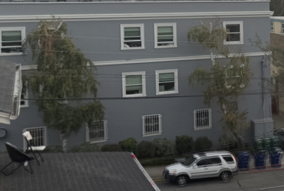
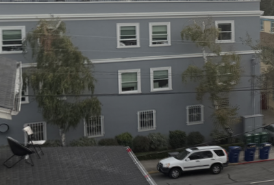
Kitchen
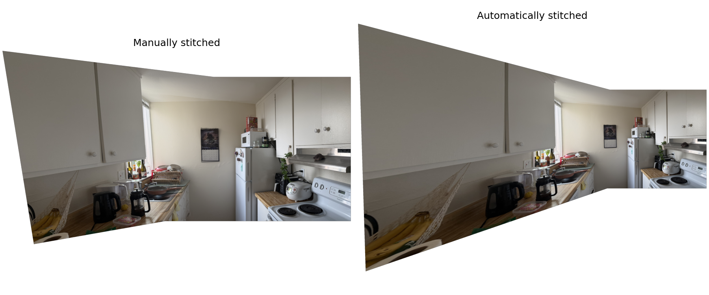
The automatic stitch stretched the left side of the kitchen more, but the calendar’s bottom edge looked cleaner in the overlap. In the manual stitch, a faint second edge appeared below it.
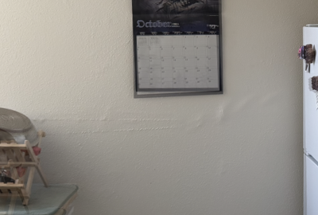
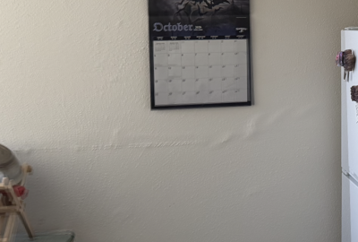
Living room
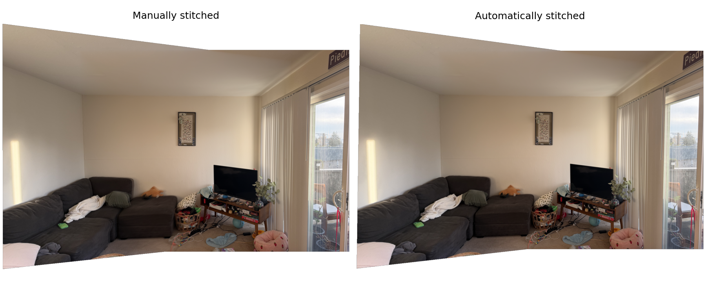
The living room looked nearly the same in both versions. Even up close, the TV frame and the objects on the stand looked similar.
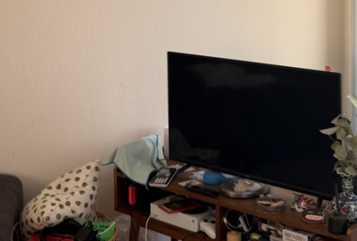